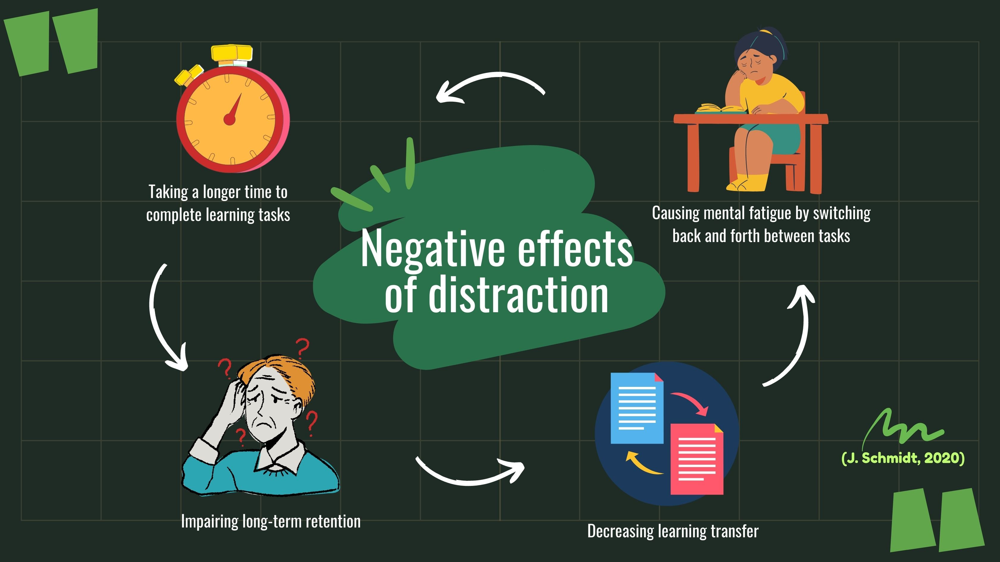
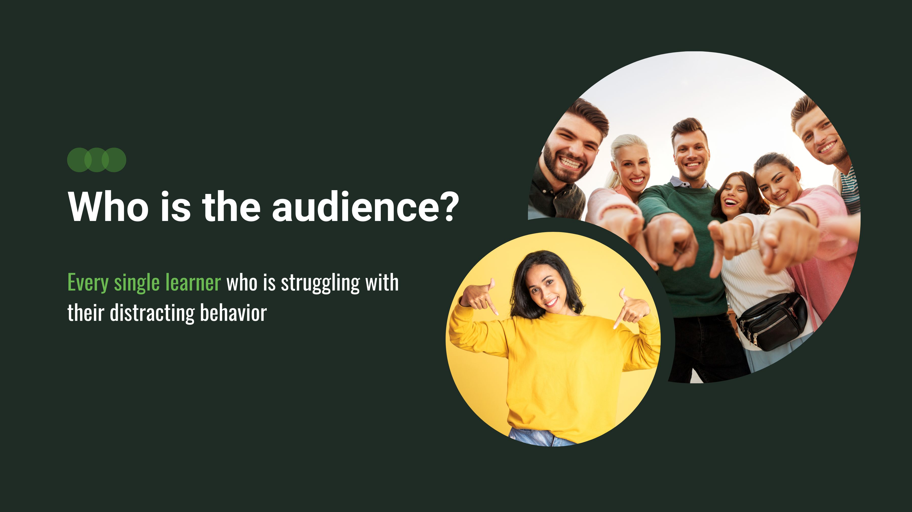

Xdistraction
KEY WORDS
POV Statement
Young adults need a supportive tool to
help them become aware of and stop
distracting behaviors in their self-studies/work.
Brief
Do you ever find yourself scrolling mindlessly through social media or checking your phone every few minutes when you're trying to study or work? You're not alone. In fact, 90% of young adults report being distracted while studying or working. But no worries, let me introduce Xdistraction, the new solution that helps you stay focused and better achieve your goals.
UX RESEARCH
The Problem
Have you ever encountered this situation? When you are studying on your own, you are often distracted by your phone or your surroundings. Especially under the global epidemic, more and more of the learning process is taking place in the home scenario. Many learners found that they would easily get distracted, leading to a decrease in learning effectiveness.
A major cause of distraction is multi-tasking. Many young people consider themselves good at multitasking. However, under most conditions, the brain can not carry out two complex tasks at the same time (Paul, 2013). So it is hard to read articles and respond to your friends' messages at the same time or write a paper while watching Game of Thrones
I am also troubled by this situation. So I wanted to design and develop an educational tool to help learners better concentrate on their learning and be more efficient.
How Might We Question
Who are the users?
User Persona
The target learners will be young adults or adults who have specific independent learning abilities. They should be high school and above learners. Their metacognition is already established, so my idea/project could help them improve their metacognition.
User Research
After the research we find out it is a way more serious problem than I thought. Based on a questionnaire of over 50 people done by myself, 90% of users have the issue of distraction. More than 61% of learners spend more than 10 minutes per distraction. Over 40% of their whole focus time are reported as distractions.
WHat's the Gap?
After research on the current product on the market, While some products like Forest and iOS focus mode have provided some helpful solutions to the problem of distractions during self-learning and independent work, there are still gaps that need to be addressed. Our project stands out by offering a unique approach to addressing these gaps through the use of data visualization, a better arrangement system, and non-electronic distraction detection.
Logic Model

UX DESIGN
Early Deisgn
BrainStorm.png)
In the ideation phase, after the braintorm, my initial idea is a combination of a mobile application and an external camera as an option.the app provides a distraction-free learning environment. Set up your own learning goal and start focusing! the external camera will be an optional add-on to detect and record you behaviors during your study
Sketch: Early Sketch for the camera device and app

Lo-Fi Prototype


Usability Test and Iteration
After interviewing my affinity group, I got feedback from the group members that the interface should be simplified. One of them reports that to-do lists with too many tasks would cause more stress and distraction, which would reduce efficiency. Besides, they suggest that I should also consider the pop-up/emergency events if it is neither learning nor distracting, such as going to the bathroom, drinking water, and such necessary activities.
Based on the above feedback, I modified two sections on the focus page.
From the one-on-one meeting with Maaike, she suggested that I give an explanation of what the app was about to do before starting the focus zone. Otherwise, the user would be confused and not know what was about to happen. In my original design, after downloading the Xdistraction, there would be tutorials to show you how to use the app, at which point the user would be told that you would be blocked from other entertainment applications and your other app usage time would be tracked. But after this feedback, I think a short explanation is necessary.
Therefore, a warning page will be added after setting the focus time and before you start concentrating on your studies. It will alert the user that you will be restricted from other entertaining applications and can lead to a page where you can edit the whitelist. Only after knowing what is about to happen, the user will start studying.
Visual Design Principle
According to research, Low wavelength colors, like green and blue, have been shown in scientific studies to improve focus and efficiency. Green is especially useful for home office workers who spend a lot of time in front of the screen, as it lessens eye fatigue. Therefore, in the visual design, we will use green and blue as the main colors.
Hi-Fi Prototype
Non-electronic Distraction Behaviors
I browsed several ways and finally decided to use the motion capture to track the learners' external behaviors. Thanks to the open resources on Github, I used OpenCV and MediaPipe models in combination with external devices to detect behaviors like typing/ face toward computer
Better Arrangement
for the gap of better arrangement, Xdistraction gives the solution with:
Raising Awareness
One of the key component in my project is help learners to raising awareness. We provide a summary page right after you finished every single study as the way help learners to build their awareness and enhance the metacognition to their learning process
With the data visualization, learners can sense more directly how much time they spent on each task and By increasing these kinds of awareness of distractions, learners can start to take control of their focus and make conscious decisions to reduce their distractions.